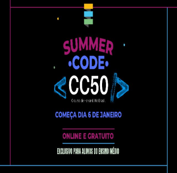

Quem somos nós?
Sobre nosso grupo
O nosso grupo, composto apenas por mulheres, tem o objetivo de criar um site para incentivar e motivar a mulher dentro da careira de tecnologia, dando opções de cursos, vagas e parte para motivação, para assim, não desistir de seguir a área. Como fazemos parte do grupo minoritário, sabemos das dificuldades das mulheres em se estabelecer na área de tecnologia, se impor dentro do ambiente de trabalho e manter a persistência de continuar estudando. Por isso, estamos aqui para apoia-las e incentiva-las, tornando a tecnologia mais igualitária e diversificada.
ODS em Foco - 5 Igualdade de Gênero

A ODS em foco do nosso projeto é a ODS-5 que visa a igualdade de gênero. Esta ODS tem como objetivo garantir o fim da discriminação contra mulheres e meninas em todos os lugares até 2030. Dar à mulher direitos iguais aos recursos econômicos, como terra e propriedade, são metas vitais para a realização desse objetivo assim como garantir o acesso universal à saúde sexual e reprodutiva.
Sobre o Summer Code
O Summer Code Fundação Estudar é um programa para estudantes do Ensino Fundamental e Ensino Médio aprenderem a programar. A base teórica do programa é o CC50, versão em português do famoso curso de introdução a programação de Harvard, onde o aluno aprende C, Python, e Javascript. Além de conceitos de algoritmos, estruturas de dados, abstração, engenharia de software, encapsulamento, gerenciamento de recursos, segurança, engenharia de software e desenvolvimento web, além de dicas de como desenvolver e apresentar um projeto final.
Monitores
joão Victor Barbosa


Gabriele Patrício S. Bastos
Sobre a Fundação Estudar

Fundação Estudar é uma organização sem fins lucrativos brasileira de incentivo à educação, criada em 1991 pelos empresários Jorge Paulo Lemann, Marcel Telles e Beto Sicupira. A organização impulsiona jovens talentos brasileiros, por meio de iniciativas de acesso ao conhecimento de ponta com bolsas de estudo nas melhores universidades do mundo, cursos para desenvolvimento de carreira além de conteúdo digital gratuito. Uma rede que apoia, desenvolve e inspira milhões de jovens brasileiros para que sigam seus sonhos e mudem o mundo.